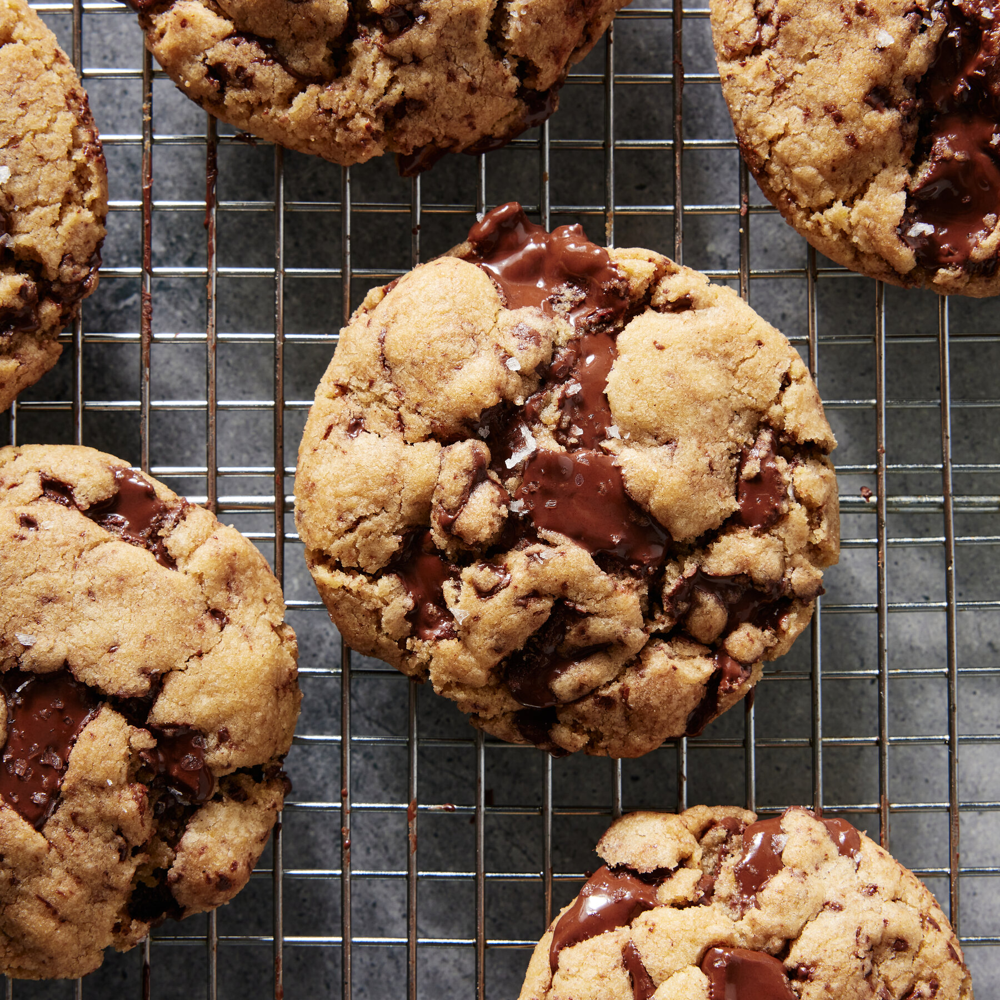

| Baking temperature: |
375°F |
| Time required: |
45 minutes |
Ingredients:
- 3/4 cup Granulated sugar
- 3/4 cup Brown sugar
- 1 cup Butter
- 1 tsp Vanilla
- 1 egg
- 2 1/4 cups Flour
- 1 tsp Baking soda
- 1/2 tsp Salt
- 1 packet (12 oz) Semisweet chocolate chips
Steps:
- Heat oven to 375°F
- Mix sugars, butter, vanilla, and eggs in a large bowl
- Stir in chocolate chips
- Stir in flour, baking soda, and salt (dough will be stiff)
- Drop dough by rounded tablespoonfuls about 2 inches apart onto an ungreased cookie sheet
- Bake for 8 to 10 minutes or until lightly browned (centers will be soft)
- Cool slightly, then remove from the cookie sheet
- Cool on a wire rack